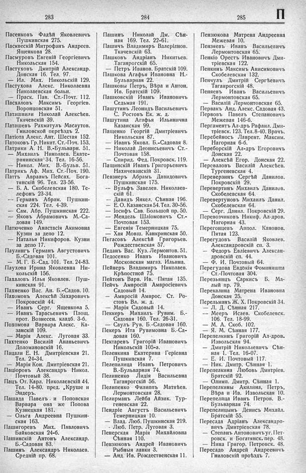

Лист источника 445
Скан

Распознанный текст
283
Пасенковъ Фадѣй Яковлевичъ
Пушкинская 275.
Паскевскій Митрофанъ Андреев.
Ященкова 28.
Пасмуровъ Евгеній Георгіевичъ
Никольская 154.
Пастуховъ Дмитрій Александр.
Донская 16. Тел. 97.
— Ил. Мих. Никольскій 129.
Пастухова Алекс. Николаевна
Николаевская больн.
— Праск. Пав. Ст.-Почт. 112.
Пасхаловъ Максимъ Георгіев.
Воронцовская 51.
Паташвили Николай Алексѣев.
Ткачевскій 39.
Паташевъ Рахматулъ Масаутов.
Гниловской переѣздъ 2.
Патіота Алекс. Ант. Шестая 152.
Патоковъ Гр. Никит. Ст.-Поч. 153.
Патрики А. Н. В.-Бульварн. 51.
— Михаилъ Николаев. Екате-
рининская 34. Тел. 16-56.
— Никол. Мих. В.-Бульв. 51.
Патрикъ Аф. Мих. Ст.-Поч. 190.
Паттъ Авраамъ Пейсах. Бога-
тянскій 96. Тел. 23-56.
— Б. А. Скобелевская 180. Те-
лефонъ 23-34.
-- Германъ Абрам. Пушкин-
ская 224. Тел. 4-39.
— Сам. Абр. Пушкинская 222.
— Яковъ Абрамовичъ М.-Са-
довая 149.
Патюченко Анастасія Акимовна
Кузни за депо 12.
— Наталья Никифоров. Кузни
за депо 17.
Паулингъ Германъ Августовичъ
Б.-Садовая 101.
— М. Г. Б.-Сад. 101. Тел. 24-83.
Паухова Ирина Яковлевна Ни-
кольскій 156.
Пахаловъ Илья Яковлев. Пуш-
кинская 91.
Пахненко Вас. Ан. Б.-Садов. 10.
Пахомовъ Алексѣй Захаровичъ
Покровскій 44.
— Иванъ Серг. Ященкова 5.
— Иванъ Тарасьевичъ Площ.
прот. Вознесен. кладб. 3-б.
Похомова Варвара Алекс. Ка-
занскій 109.
— Марія Алекс. Луговая 33.
Пахтенко Василій Ананьевичъ
Доломановскій 16.
Пацали Е. Н. Дмитріевская 21.
Тел. 24-34.
— Марія Кон. Дмитріевская 21.
Паціоровъ Александръ Никол.
Почтовый 38.
Пацъ От. Карл. Николаевскій 44.
Тел. 14-80. пред. „Круше и
Эндеръ.
Пашада Павелъ . и Поповская
Варвара она же Попова
Кузнецкая 181.
— Ольга Андреевна Пушкин-
ская 163.
Пашигоревъ Мих. Павловичъ
Байковская 24-б.
Пашинскій Антонъ Александр.
Б.-Садовая 83.
Пашинъ Александръ Николаев.
Средній пр. 68.
284
Пашинъ Николай Дм. Сѣн-
ная 169. Тел. 22-61.
Пашичъ Владимиръ Валеріанов.
Ткачевскій 63.
Пашковъ Андріанъ Никитьев.
Таганрогскій 65.
— Петръ Иванов. Братскій 109.
Пашкова Агафья Ивановна Н.-
Бульварная 22.
Пашковы Петръ, Вѣра и Антон.
Ив. Братскій 109.
Пашковскій Иванъ Ивановичъ
Седьмая 191.
Пашутинъ Леонидъ Васильевичъ
С. Ростовъ Ек. ж. д.
Пашутина Агафья Ильинична
Казанская 99.
Пащенко Георгій Дмитріевичъ
Никольская 87.
— Иванъ Яковл. Б.-Садовая 8.
— Николай Деонисьевичъ Ст.-
Почтовая 158.
— Спирид. Фед. Покровск. 119.
Пащинскій Иванъ Григорьевичъ
Нахичеванскій 31.
Певзнеръ Абрамъ Давидовичъ
Пушкинская 175.
-- Вульфъ Завелев. Николаев-
скій 61.
— Давидъ Янкел. Сѣнная 196.
— Е. О. Казанская 54. Тел. 30-56.
— Іосифъ Сав. Большой пр. 50.
— Мендель Шліомовичъ Ст.-
Почтовая 153.
— Евгенія Темерницкая 75.
— Хая Мовш. Канкринская 50.
Пегасовъ Алексѣй Григорьев.
Рождественская 57.
Педанъ Вас. Куз. Лермонтов. 51.
Педосенко Иванъ Ивановичъ
Московская магаз. Ильина.
Пейнеръ Владимиръ Николаев.
Крѣпостной 75.
Пейтонъ Варв. Ив. Пятая 135.
Пейчъ Амвросій Амвросіевичъ
Садовый 14.
— Амвросій Амврос. Ст. Ро-
стовъ Вл. ж. д.
— Марія Садовый 14.
Пеккеръ Михаилъ Рувим. Б.-
Садовая 160. Тел. 26-31.
— Саулъ Рув. Б.-Садовая 160.
Пекеръ Ита Рувимовна Б.-Са-
довая 160.
Пектаревъ Григорій Ивановичъ
Никольскій 105-а.
Пеленкина Екатерина Геріевна
Пушкинская 7.
Пелепилица Иванъ Петровичъ
В.-Бульварная 74.
Пелиненко Лидія Васильевна
Таганрогскій 56.
Пелипенко Филиппъ Матвѣев.
Лермонтовская 28.
Пелирманъ Лейба Айзик. Тур-
геневская 22.
Пендріе Августъ Васильевичъ
Темерницкая 10.
— Влад. Люб. Пушкинская 219.
- Люб. Петр. Луговая 3.
Пенерская Марія Михайловна
Сѣнная 110.
Пензюковъ Андрей Ивановичъ
Рыбныя лавки 3.
— Анд. Ив. Рождественская 11.
285
П
Пензюкова Матрена Андреевна
Межевая 10.
Пензяевъ Иванъ Васильевичъ
Лермонтовская 65.
Пенкіо Орестъ Ивановичъ Дми-
тріевская 122.
Пенкинъ Максимъ Анисимовичъ
Скобелевская 132.
Пенчулъ Дмитрій Сергѣевичъ
Таганрогскій 48.
Пеняевъ Иванъ Васильевичъ
Лермонтовская 65.
— Василій Лермонтовская 65.
Первакъ Анд. Алекс. Садовая 43.
Первовъ Павелъ Степановичъ
Межевая 146-б.
Пергаментъ Ал-дръ Рафаил. Дми-
тріевск. 123. Тел. 8-40. Врачъ.
Перебейносъ Лаврент. Максим.
Нагорная 6-б.
Переборскій Ал-дръ Егоровичъ
Донская 22.
— Алексѣй Егор. Донская 22.
Персваловъ Василій Алексѣев.
Тургеневская 4.
Переверзинъ Сергѣй Данилов.
Покровскій 29.
Перевертинъ Михаилъ Данилов.
Скобелевская 64.
Перевертуновъ Михаилъ Данил.
Скобелевская 64.
— Серг. Данил. Покровскій 29.
Перевозчиковъ Никиф. Ал-дров.
Нагорная 43.
Перегонцевъ Аппол. Канонов.
Пятая 123.
Перегудовъ Василій Яковлев.
Александровскій сп. 3.
— Федоръ Евліевичъ Алексан-
дровскій сп. 44.
— Ф. И. Почтовый 64.
Перегудова Евдокія Фоминишна
Ст.-Почтовая 304.
Перезьянцъ Саркисъ Б. Ма-
лый пр. 79.
Перекалина Матрена Ивановна
Донская 25.
Перельманъ Ж. Х. Покровскій 34.
— Л. Д. Сѣнная 217.
— Мееръ Исаев. Скобелевск.
106. Тел. 18-99.
— М. А. Скоб. 102.
— Я. М. Сѣнная 177.
Перепелкинъ Григорій Ал-дров.
Извольская 94.
— Дмитрій Николаевичъ Сѣн-
ная 1. Тел. 16-07.
— Е. И. Почтовый 117.
— Ник. Дмитр. Сѣнная 1.
Перепелкина Любовь Дмитріев.
Братскій 92.
— Олимп. Дмитр. Сѣнная 1.
Перепелкины Акилина, Петръ,
Вѣра и Ив. Извольская 10.
Перепелица Иванъ Петров. В.-
Бульварная 74.
Перепелицынъ Денисъ Михайл.
Братскій 55.
Пересада Адріанъ Александро-
вичъ Дмитріевская 78.
— Степанъ Антоновичъ уг. Пет-
ровск. и Богатянск. пер. 48.
— Нина Григор. Петровск. 48.
Пересадо Андрей Андреевичъ
Гниловскій проѣздъ 7.